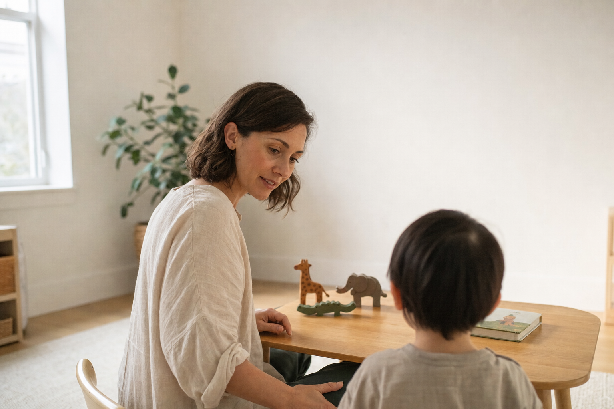
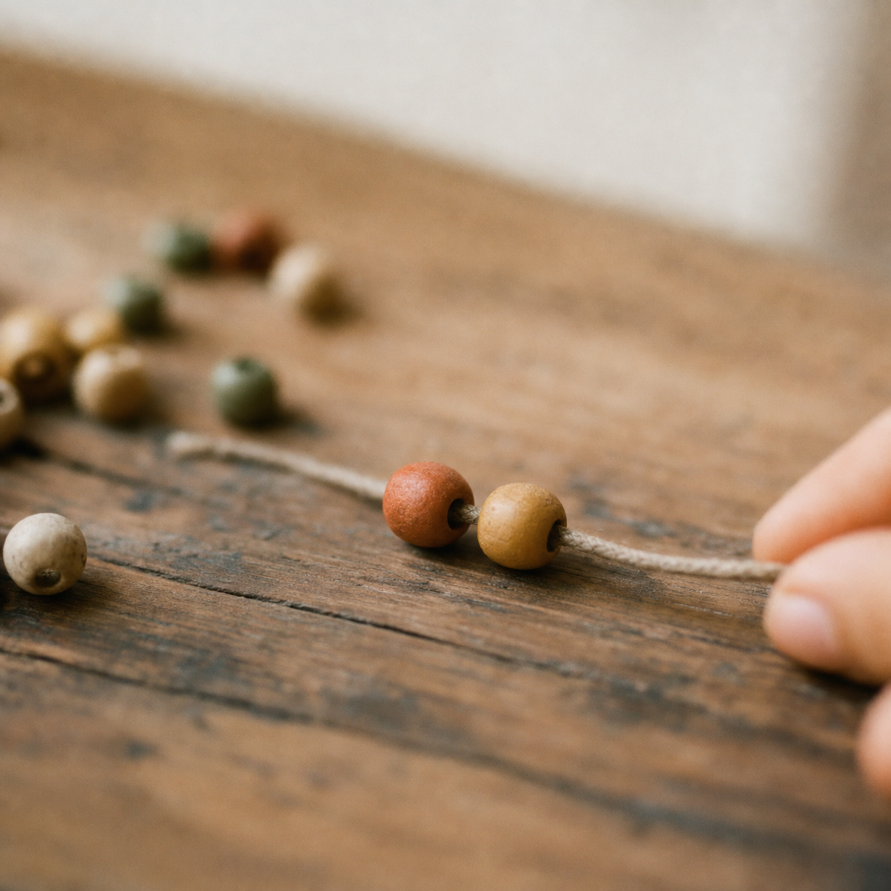
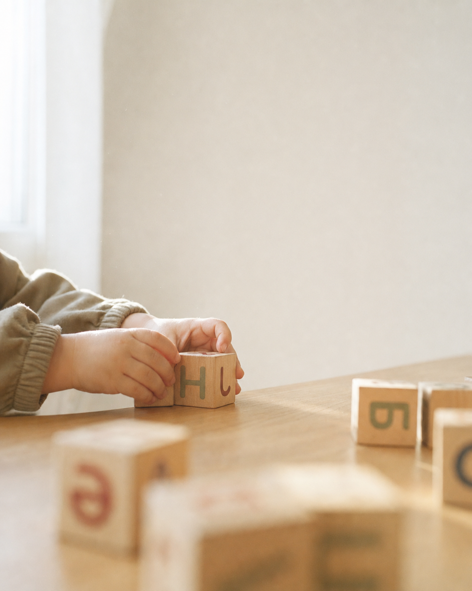

Бала сөйлей бастағанда — үй тыныш дем алады.
Assyl-ai — Ақтау қаласындағы балалар даму орталығы. 8 жыл ішінде 500-ден астам отбасы осы есіктен кіріп, бала алғашқы сөзін айтып шыққан.

2–5 жас — мидың 85%-ы қалыптасатын кезең. Әр апта маңызды. Бірақ асығыс та маңызды емес — дұрыс бастау маңызды. — Нейродаму зерттеулерінен
Төрт
қадам.
Асықпаймыз. Әр қадамда не болатыны — алдын ала түсінікті. Ешбір міндеттеме жоқ, төлем — тек сіз дайын болғанда.
Диагностика
30 минут. Маман баламен таныс болады, сөйлеу, зейін, моторика деңгейін тіркейді. Тегін, міндеттемесіз.
Жеке жоспар
Қай маман қажет, қандай жиілікпен, нақты мақсаттар не — жазбаша түрде ұсынамыз. Шешім сізде.
Сабақтар
Ыңғайлы уақыт таңдайсыз. Әр айдың соңында ата-анамен аралық прогрессті бірге талдаймыз.
Өзгеріс
Жаңа сөздер, ұзағырақ назар, тыныш күн. Нақты нәтиже — баланың жағдайына тәуелді, кепілдік берілмейді.
Бір
шаңырақ
астында.
Төрт маман — бір орталықта. Әр маманға бөлек жүрудің керегі жоқ. Бала үшін таныс орта, ата-ана үшін — уақыт.
| 01 | Логопед | Бала алғашқы сөздерді айтады. Дыбыстар дұрысталады. Сөздік қоры біртіндеп өседі. |
| 02 | Дефектолог | Зейін ұзағырақ тұрады. Тапсырма аяқталады. Эмоциялық реакция тыныштала түседі. |
| 03 | АФК | Қозғалыс координациясы жақсарады. Сенімді жүріс. Денедегі мықтылық сөйлеуге де көмектеседі. |
| 04 | Логомассаж | Сілекей ағуы азаяды. Тамақты еркін шайнайды. Артикуляция аппараты жұмысқа дайын болады. |
| 05 | Сенсорлық интеграция | Дыбыс пен жарыққа сезімталдығы реттеледі. Қоршаған орта үрейлі емес, қызықты болып көрінеді. |
«Балам 3 жаста мүлдем сөйлемеді. Жадыра апаймен 6 апта. Бір күні таңертең: „Ана, су“ деп сұрады. Ол сөзді бір жыл бойы күткен едім.»

Жадыра
Сапарбаевна.
Жоғары санатты логопед-дефектолог. Сегіз жыл бойы Ақтау қаласында жұмыс істейді. Әр балаға жеке жоспар жасайды, ата-анаға әр аптада ашық кері байланыс береді.
«Әрбір бала — өзінше. Біреуіне үш апта, біреуіне үш ай керек. Біздің міндет — жалған уәде бермей, шын қадамды көрсету.»
30 / 60 / 90
күн.
Нақты кепілдік жоқ. Бірақ орта есеп — мынадай. Бала ерекше, қарқын да ерекше.


Бір кездесу — баланың нақты жағдайы, жазбаша жоспар, ешбір міндеттеме.
24 сағат ішінде хабарласамыз. Диагностика 30 мин, тегін, ешбір міндеттеме жоқ. Баланың жағдайы мен мақсаттар — жазбаша түрде беріледі. Кепілдік берілмейді, себебі нәтиже әр баланың жағдайына тәуелді.